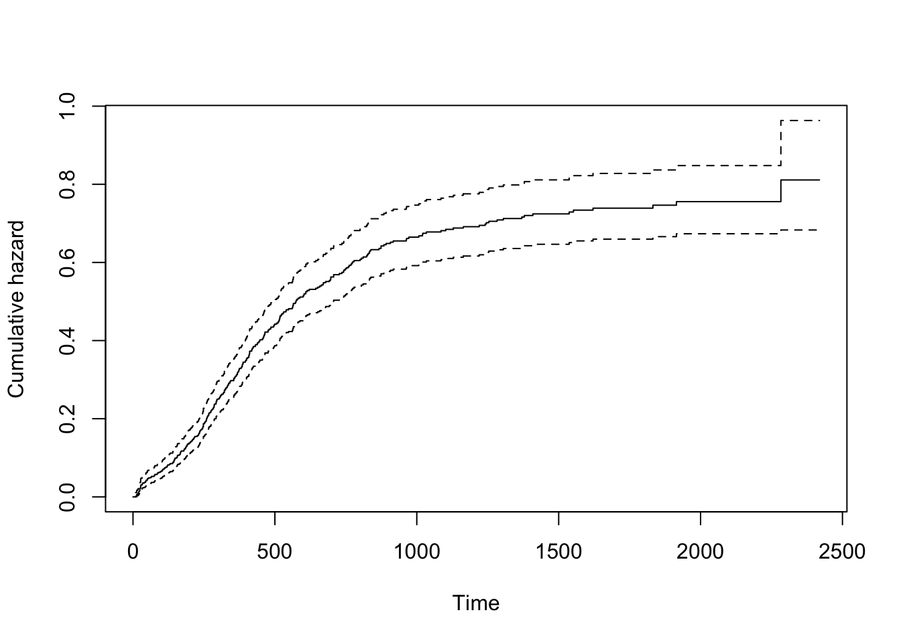

Basic survival analysis in R
Getting started
The survival
package by Terry Therneau and collaborators is installed along with
the base functions in R, so all you need to do after
opening R is to load the package using the library()
function.
The package comes with various in built datasets. For a full list, see the start of the index of the survival reference manual. Each dataset is described in detailed in the manual.
Let us load the survival package and take a look at the dataset
myeloid.
This is a simulated dataset based on a trial in acute myeloid
leukemia, containing 646 observations of 9 variables. Among these
variables, futime is the time to death or last time of
follow-up, death is an event indicator (equal to 1 if the
time listed in futime is a death and 0 if it is a censoring
event), trt is the treatment arm (either arm A or arm B)
and sex is the sex (where “f” is female and “m” is
male).
The function head() show the first 6 rows of the
dataset.
library(survival)
head(myeloid)## id trt sex futime death txtime crtime rltime
## 1 1 B f 235 1 NA 44 113
## 2 2 A m 286 1 200 NA NA
## 3 3 A f 1983 0 NA 38 NA
## 4 4 B f 2137 0 245 25 NA
## 5 5 B f 326 1 112 56 200
## 6 6 B f 2041 0 102 NA NAKaplan-Meier survival curves
Survival curves can be plotted using the survfit()
function, which take a formula as an argument.
In the survival package the specification of time-to-event outcomes
on the right side of the equation in the formula is done using the
Surv() function. This function take the variable name used
for the individual’s event times and event indicator(s) as
arguments.
In the myeloid dataset the event times was called
futime and the event indicators was called
death, and death==1 corresponded to an event
time.
The below code will produce a plot of the Kaplan-Meier survival function.
km <- survfit(Surv(futime, death==1) ~ 1, myeloid)
plot(km, xlab="Time", ylab="Survival probability")
Pointwise 95% confidence intervals are added by default when only a
single curve is plotted (which is the case when the right side of th
formula is 1 as above).
For more options see for example the R help file for
plot.survfit by typing ?plot.survfit in R.
Remember that for all R commands useful information on options, and
often runnable examples, are available in the help files that can be
accessed by typing ? and the name of the command.
Nelson-Aalen cumulative hazard curves
Similarly, a plot of the corresponding Nelson-Aalen cumulative hazard
function can be produced by using the option cumhaz=TRUE
when plotting the survfit object.
plot(km, cumhaz=T, xlab="Time", ylab="Cumulative hazard")
The log-rank test
When interested in comparing survival curves between groups, these
can be plotted by adding a categorical grouping variable on the right
side of the equation in survfit. One such variable is the
trt variable in the myeloid dataset.
Se the below code, which produce separate curves for treatment group
A and B, with an added legend using the legend()
function.
km2 <- survfit(Surv(futime, death==1) ~ trt, myeloid)
plot(km2, col=c(1, 2), xlab="Time", ylab="Survival probability")
legend("topright", c("trt = A", "trt = B"), col=1:2, lwd=2)
The most common test for comparing two survival curves is the
log-rank test. This is here implemented with the survdiff
function, and can be used as shown in the below code.
survdiff(Surv(futime, death==1) ~ trt, myeloid)## Call:
## survdiff(formula = Surv(futime, death == 1) ~ trt, data = myeloid)
##
## N Observed Expected (O-E)^2/E (O-E)^2/V
## trt=A 317 171 143 5.28 9.59
## trt=B 329 149 177 4.29 9.59
##
## Chisq= 9.6 on 1 degrees of freedom, p= 0.002We see that the p-value for the test of difference between groups is 0.002.
The Cox proportional hazard model
A similar test between groups can also be performed using a Cox
proportional hazard model, with the function coxph as shown
below.
cfit <- coxph(Surv(futime, death==1) ~ trt, myeloid)
summary(cfit)## Call:
## coxph(formula = Surv(futime, death == 1) ~ trt, data = myeloid)
##
## n= 646, number of events= 320
##
## coef exp(coef) se(coef) z Pr(>|z|)
## trtB -0.3457 0.7077 0.1122 -3.081 0.00206 **
## ---
## Signif. codes: 0 '***' 0.001 '**' 0.01 '*' 0.05 '.' 0.1 ' ' 1
##
## exp(coef) exp(-coef) lower .95 upper .95
## trtB 0.7077 1.413 0.5681 0.8818
##
## Concordance= 0.545 (se = 0.014 )
## Likelihood ratio test= 9.52 on 1 df, p=0.002
## Wald test = 9.5 on 1 df, p=0.002
## Score (logrank) test = 9.59 on 1 df, p=0.002We here see a p-value of 0.00206 for difference between groups, and an estimated hazard ratio of 0.7077 in favour of treatment B.
More independent variables can now be included by adding variables to
the right side of equation. The below code show a Cox model with
trt and sex as independent variables.
cfit <- coxph(Surv(futime, death==1) ~ trt + sex, myeloid)
summary(cfit)## Call:
## coxph(formula = Surv(futime, death == 1) ~ trt + sex, data = myeloid)
##
## n= 646, number of events= 320
##
## coef exp(coef) se(coef) z Pr(>|z|)
## trtB -0.3582 0.6989 0.1129 -3.174 0.00151 **
## sexm 0.1150 1.1219 0.1128 1.020 0.30782
## ---
## Signif. codes: 0 '***' 0.001 '**' 0.01 '*' 0.05 '.' 0.1 ' ' 1
##
## exp(coef) exp(-coef) lower .95 upper .95
## trtB 0.6989 1.4307 0.5602 0.872
## sexm 1.1219 0.8913 0.8994 1.399
##
## Concordance= 0.549 (se = 0.016 )
## Likelihood ratio test= 10.56 on 2 df, p=0.005
## Wald test = 10.53 on 2 df, p=0.005
## Score (logrank) test = 10.62 on 2 df, p=0.005Further references
For a more thorough introduction, see for example the survival package vignette and the other vignettes of the survival package.